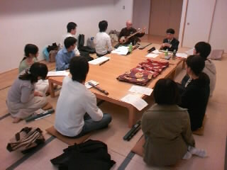

雅楽部会の活動
雅楽部会とは雅楽の練習を行う部会です。雅楽は神道儀礼に深く関わる日本伝統のクラシック音楽であり、西洋音楽とはまったく異なる独特のその音色に魅せられた人も多いのではないでしょうか。雅楽部会においては龍笛、篳篥、笙といった基本的な楽器の中から楽器を選択し、週に一回程度、みんなで練習を行います。また、年に一回～数回、雅楽の先生をお招きして、演奏指導を受けます。
先生をお招きしての演奏練習
これまでに雅楽の演奏を聞いてその音色に魅せられたという人、大学から新しく音楽を始めてみたいという人、これまでに吹奏楽などをやっていたけれども新しく雅楽に手を出してみたいという人など、少しでも雅楽に興味を持った人は遠慮なく入会してみてください。雅楽の練習成果は、学園祭などで発表の場を設け、披露します。